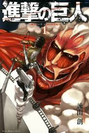
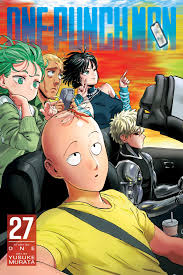
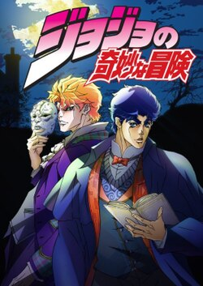
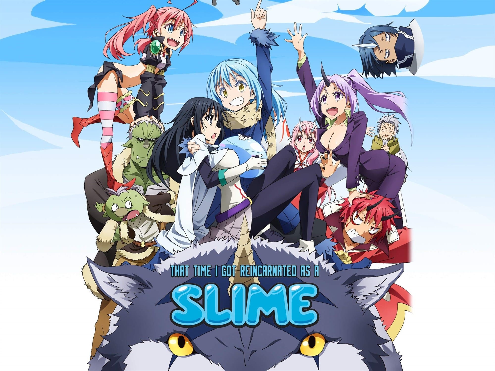
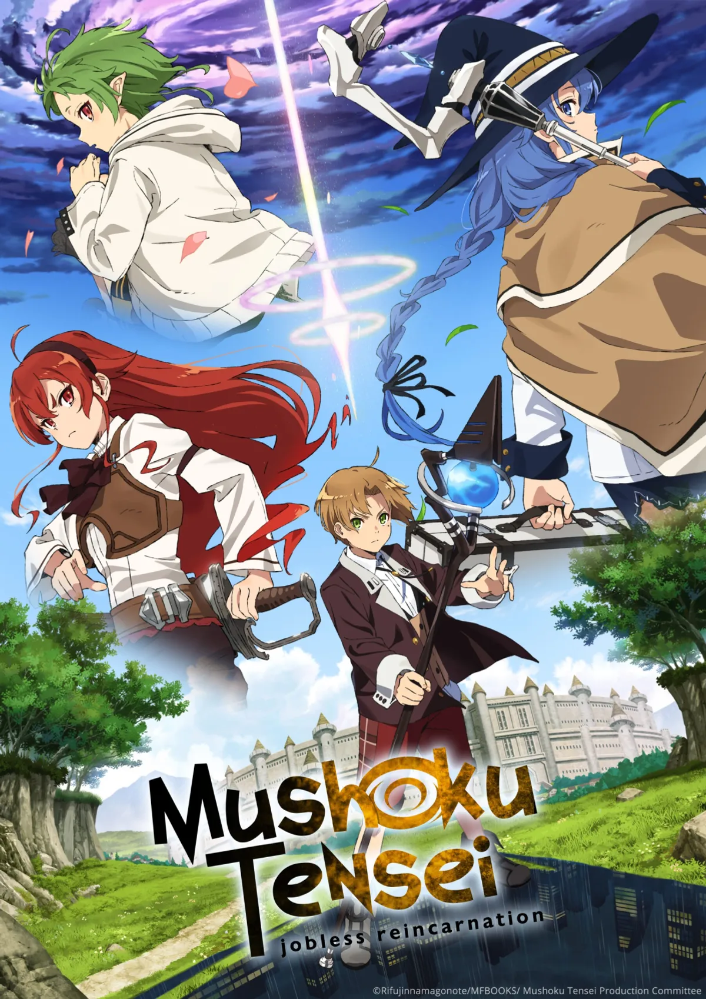
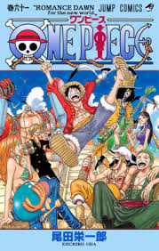

In a world surrounded by towering walls, humanity is on the brink of extinction. Eren Yeager witnesses his home destroyed and vows to wipe out the giant humanoid Titans that devour humans without mercy.
After enlisting in the military with his friends Mikasa and Armin, Eren discovers a shocking power within himself that may change the fate of the survivors. The story explores the brutal fight for survival, the mysteries behind the Titans, and the hidden history of the walls.
As secrets unravel, alliances shift and the line between friend and enemy blurs, making every battle a test of courage, trust, and what it means to be truly free.

After becoming a hero for fun, Saitama discovers that he can defeat any opponent with a single punch. His unmatched power leaves him bored and searching for a worthy challenge.
Joined by his eager disciple Genos, Saitama fights monsters, villains, and mysterious threats while navigating the Hero Association and the public’s mixed reactions to his casual strength.
The series blends over-the-top action, sharp comedy, and surprising emotion as Saitama learns that true heroism is not just about power—but also about finding meaning and connection in a world that still needs saving.

JoJo's Bizarre Adventure follows the epic legacy of the Joestar family as each generation battles supernatural enemies with powerful stands, ancient curses, and impossible fate.
From Jonathan Joestar's fight against the vampire Dio in the 19th century to Jotaro Kujo facing cosmic threats in the modern era, the series blends intense action, dramatic flair, and wild, unpredictable twists.
Each part introduces new heroes, strange powers, and a unique tone, but all share the same core: courage, loyalty, and the determination to overcome evil no matter how bizarre the challenge.

That Time I Got Reincarnated as a Slime follows Satoru Mikami, a regular office worker who dies unexpectedly and is reborn in a fantasy world as a slime creature with unique abilities. Though his new form looks weak at first, he quickly discovers that he can absorb anything and gain its powers.
After meeting a powerful sealed dragon named Veldora, he receives the name Rimuru Tempest and begins his journey in this new world. Using his intelligence and evolving abilities, Rimuru starts forming alliances with monsters and other races, aiming to create a safe and peaceful nation where everyone can live together.
As his influence grows, so do the challenges. Rimuru faces dangerous demon lords, political tension between kingdoms, and wars that threaten the fragile balance of the world. Each victory pushes him further into a role he never expected: a leader shaping the fate of entire nations.
Despite the battles and heavy responsibilities, the series keeps a strong balance of humor, adventure, and emotional moments. It highlights Rimuru’s growth from an ordinary human into a wise and powerful ruler, while exploring themes of friendship, loyalty, and building a better society from nothing.

Jobless Reincarnation follows the story of a shut-in who dies in his real world and is reincarnated into a magical fantasy world as a newborn boy named Rudeus Greyrat. Retaining all his memories from his past life, he decides to live this second chance without repeating his old regrets.
Born into a talented family, Rudeus quickly shows exceptional magical ability and begins training in magic at a very young age. Under the guidance of his mentors, he learns not only spells and combat skills but also important life lessons about discipline, relationships, and responsibility.
As he grows up, Rudeus travels across different regions, meeting companions, facing dangerous enemies, and dealing with political and magical conflicts that shape the world around him. Each journey pushes him to confront both external threats and his own emotional scars from his past life.
The story focuses heavily on character development, showing Rudeus slowly maturing from a flawed and insecure child into someone trying to become a better person. Along the way, friendships, losses, and personal struggles play a major role in shaping his path.
Blending fantasy adventure with deep emotional storytelling, Jobless Reincarnation explores themes of redemption, growth, and the idea that it is never too late to change your life if you are given a second chance.

One Piece follows the journey of a young pirate, Monkey D. Luffy, who gains rubber-like powers after eating a mysterious Devil Fruit. Inspired by his childhood hero Shanks, Luffy sets out to become the King of the Pirates by finding the legendary treasure known as the One Piece.
He forms the Straw Hat Pirates, a diverse crew of strong and loyal companions, each with their own dreams and abilities. Together, they sail across the dangerous seas of the world in search of freedom, adventure, and the Grand Line's greatest secrets.
The world is filled with powerful pirates, corrupt governments, ancient mysteries, and dangerous naval forces that constantly challenge their journey. Every island they reach brings new conflicts, emotional stories, and battles that test their strength and bonds.
At the center of the story is the mystery of the One Piece itself, left behind by the former Pirate King Gol D. Roger, whose final words sparked the beginning of the great pirate era.
Blending adventure, humor, and emotional storytelling, One Piece is a long-running tale about freedom, friendship, and chasing dreams no matter how impossible they seem.